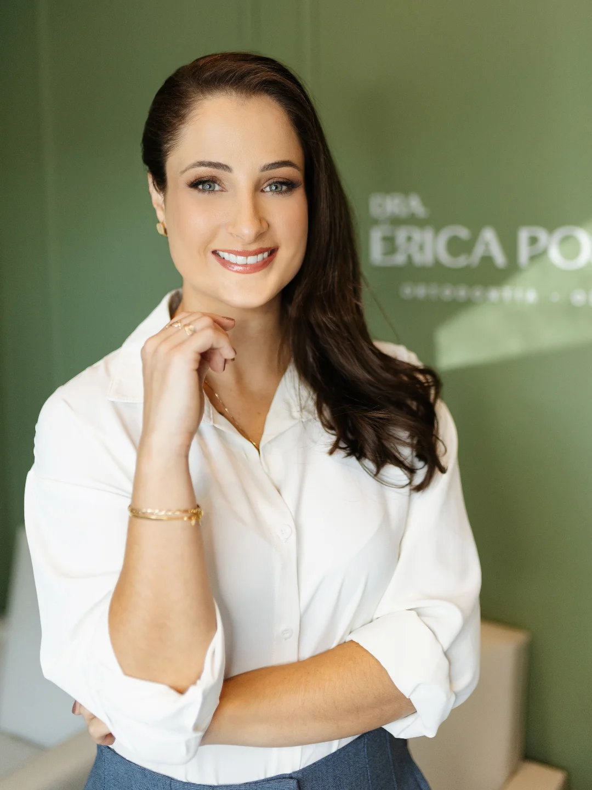
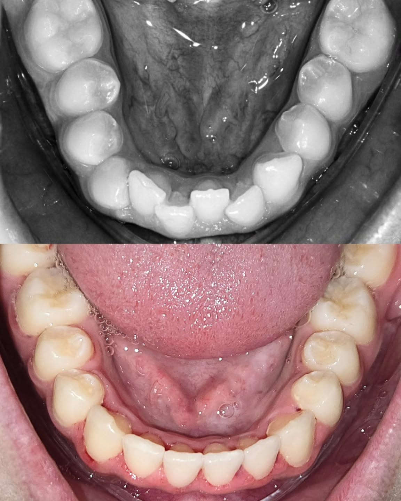
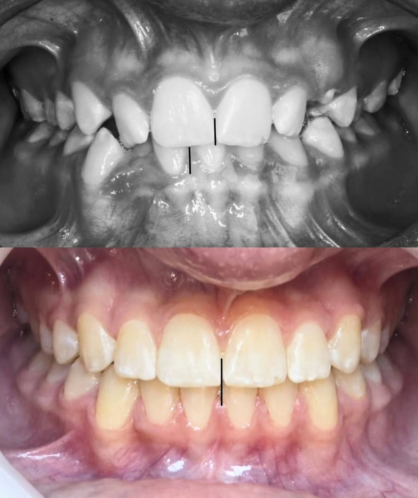
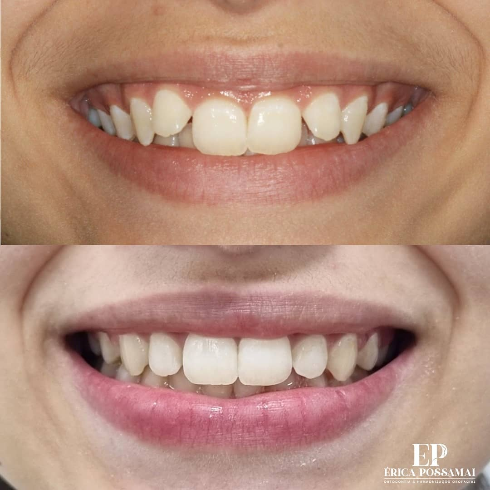

Alinhe seus dentes e conquiste o sorriso que você deseja
Tratamento ortodôntico com planejamento digital, conduzido por especialista. Agende uma avaliação e entenda, com clareza, o caminho para alinhar seus dentes e sua mordida.
Agendar avaliação pelo WhatsApp
Diferenciais do tratamento
-
Planejamento com tecnologia digital
Utilizamos tecnologia digital no planejamento do tratamento, o que permite simular uma prévia do resultado antes de começar — para você entender cada etapa com mais clareza e segurança. Os resultados podem variar de acordo com cada caso.
-
Aparelho estético
Existe a opção de aparelho estético, sem a aparência metálica tradicional, pensada para quem busca um tratamento mais discreto no dia a dia.
-
Atendimento personalizado
Cada sorriso é único. O tratamento é planejado de forma individual, respeitando as necessidades, a rotina e os objetivos de cada paciente.
-
Acompanhamento próximo
Do início ao fim, você conta com acompanhamento atencioso em cada consulta, para que o tratamento evolua com conforto e confiança.
Sobre a Dra. Érica Possamai
A Dra. Érica Possamai Ducioni é cirurgiã-dentista (CRO-SC 14427), especialista em Ortodontia e pós-graduada em Harmonização Facial, com atuação também em Ortopedia Funcional dos Maxilares e Odontologia Estética. São mais de 11 anos dedicados à saúde e ao alinhamento do sorriso, com mais de 6 mil pacientes atendidos. O compromisso é sempre o mesmo: um atendimento atencioso, próximo e baseado em um planejamento cuidadoso para cada caso.
- 11 anos de experiência clínica
- +6 mil pacientes atendidos
- 5.0 estrelas no Google e no Doctoralia
Como funciona o tratamento
-
1
Avaliação
Na primeira consulta, a Dra. Érica avalia seus dentes e sua mordida e conversa com você sobre seus objetivos.
-
2
Planejamento digital
Com apoio de tecnologia digital, montamos o plano do seu tratamento e, quando possível, uma prévia do resultado esperado.
-
3
Instalação do aparelho
Definido o plano, o aparelho é instalado — com a opção estética, se for a sua escolha — e você recebe todas as orientações de cuidado.
-
4
Acompanhamento
Nas consultas de retorno, acompanhamos de perto a evolução do seu sorriso até a conclusão do tratamento.
Resultados reais de pacientes
Casos reais acompanhados de perto pela Dra. Érica, do planejamento até a conclusão do tratamento.
-

-

-

Resultados variam de paciente para paciente, conforme avaliação individual.
O que dizem os pacientes
-
“Dra. Érica não é apenas uma excelente profissional, e sim uma ótima pessoa. Tão atenciosa! Será sempre a minha dentista.”
-
“Excelente atendimento! Profissional atenciosa e comprometida com cada etapa do tratamento. Passa total confiança e segurança.”
Perguntas frequentes
Dói para colocar o aparelho?
A instalação do aparelho costuma ser tranquila. É comum sentir uma leve sensibilidade ou pressão nos primeiros dias, à medida que os dentes começam a se ajustar — algo que tende a passar rapidamente. A Dra. Érica orienta você em cada etapa para que o processo seja o mais confortável possível. A experiência pode variar de pessoa para pessoa.
Quanto tempo dura o tratamento?
A duração varia conforme cada caso, o objetivo do tratamento e a resposta de cada paciente. Essa estimativa é feita de forma individual durante a avaliação e o planejamento digital, quando a Dra. Érica explica o que esperar no seu caso.
Atende convênio?
O atendimento é exclusivamente particular — não atendemos convênios. Em contrapartida, oferecemos formas de pagamento facilitadas, que são apresentadas durante a consulta de avaliação.
Atende adultos e crianças?
Sim. A Dra. Érica atende adultos e crianças. Na Ortopedia Funcional dos Maxilares, inclusive, o acompanhamento em fases mais precoces pode ser importante. A avaliação indica o momento e o tipo de tratamento mais adequado para cada idade.
Onde estamos
Núcleo Empresarial UnoRua Araranguá, 35 — sala 04, térreo
Centro, Criciúma — SC
CEP 88801-600
Dê o primeiro passo rumo ao seu novo sorriso
Agende sua avaliação com a Dra. Érica Possamai e descubra, com um planejamento cuidadoso, o caminho para alinhar seus dentes e sua mordida. Os resultados podem variar de acordo com cada caso.
Agendar avaliação pelo WhatsApp